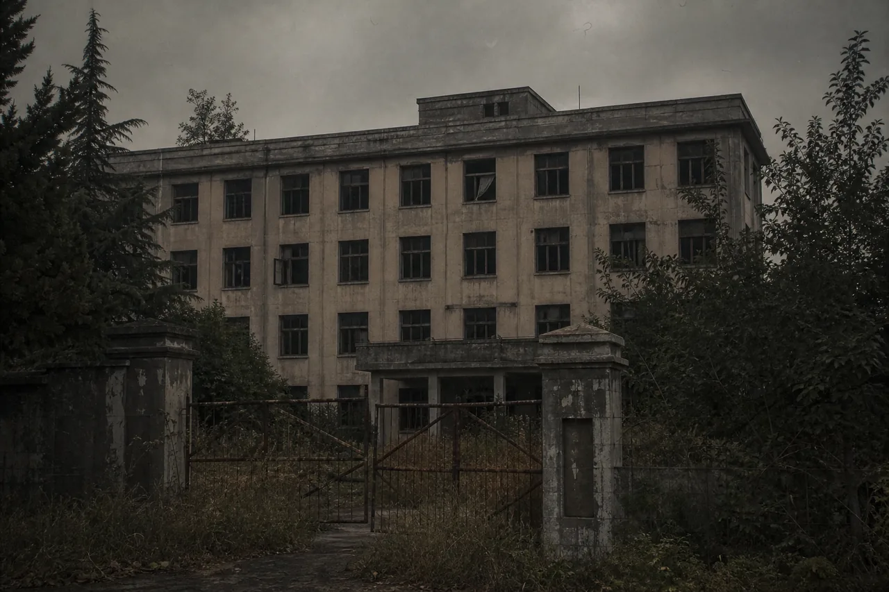
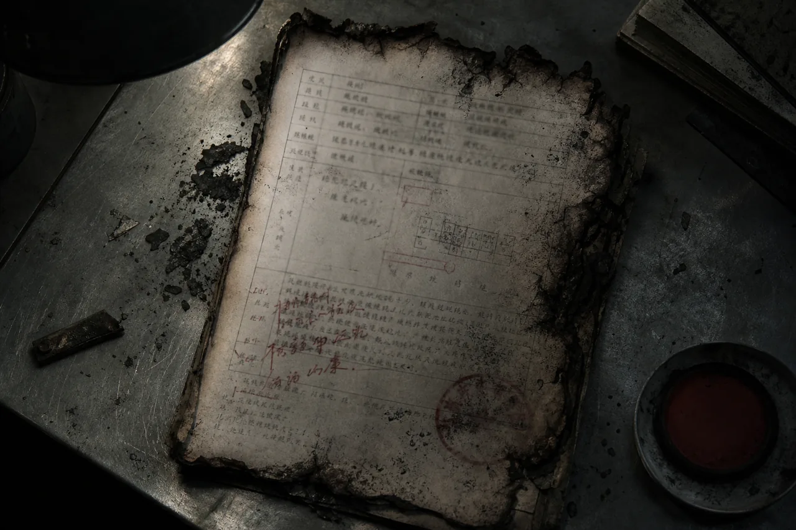
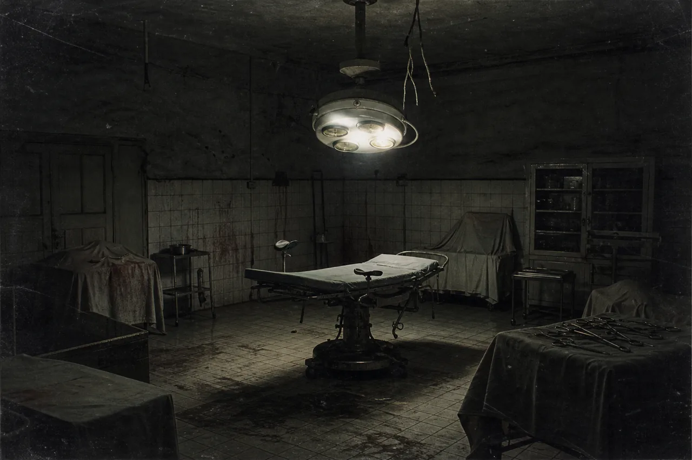
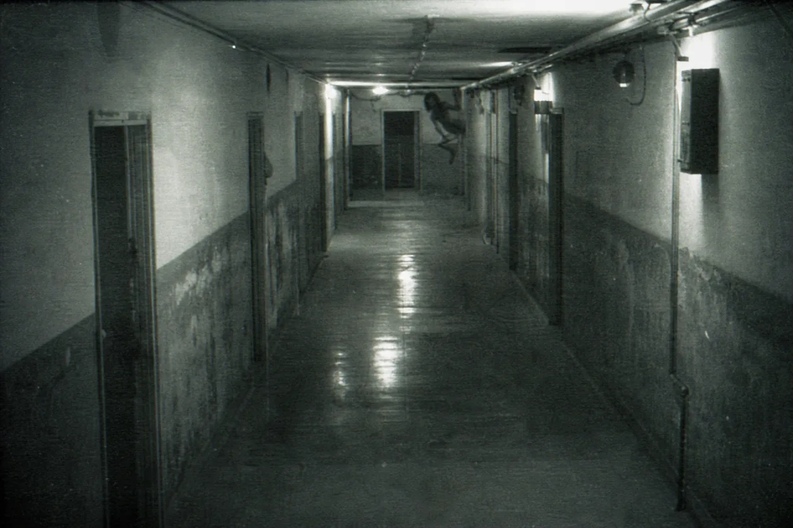

● RECOVERED
RENHE HOSPITAL / WEST GATE
DATE UNKNOWN · FILM 01
RENHE HOSPITAL / WEST GATE
DATE UNKNOWN · FILM 01
安城市地方志数字化工程 / 已停止维护
人和医院在线档案馆 · 1972—1998
本站保存人和医院旧址的公开记录。因原始数据库部分损坏，请输入准确关键词检索。你在这里看到的内容从未经过完整核验。
节点状态只读 / 不稳定
最后同步1999.03.15
IMG-01 / 人和医院

IMG-03 / 事故报告
IMG-08 / 手术室
IMG-10 / B3走廊检索封存档案
SEARCH IS BEING LOGGED⌁
等待检索请求
不要搜索你不想知道的事。
404
档案中没有这个词。
数据库拒绝模糊检索。请重新阅读已经恢复的档案；系统不会提供关联词或下一步建议。